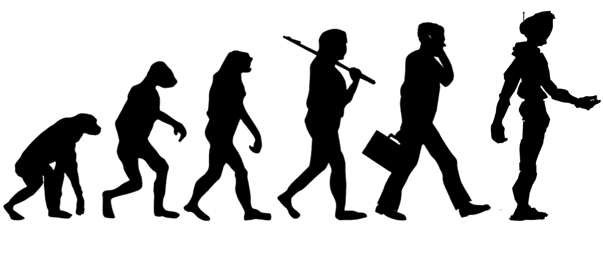

Aarde
Algemene informatie
- Oppervlakte: 510.100.933 km²
- Totale afstand rond de evenaar: 40.076.km
- Totale gewicht: 5.977.102,4 kg
- Straal: 6370 km
Werelddelen
220 miljoen jaar geleden vormden alle continenten samen één groot continent dat "Pangea" werd genoemd. Er zijn nu 5 werelddelen, maar Amerika is in tweeën gedeeld. Daarom zijn er 6 continenten: dat zijn: Noord-Amerika, Zuid–Amerika, Azie, Europa, Afrika, Oceanie en Antarctica.
Leven op aarde
Men speculeert dat de aarde 4,5 miljard jaar geleden is ontstaan, net zoals ons hele zonnestelsel. De oudste fossielen die zijn gevonden zijn 3 miljard jaar oud. Daarvoor leefden er eukaryoten en prokaryoten, dat waren eencellige organismen. Die hebben zich geëvolueerd van zeedieren tot landdieren, waarschijnlijk door de toename zuurstof van en afname van CO2 in die periode (410 tot 354 miljoen jaar geleden). Vier miljoen jaar geleden ontstond de eerste mens, de Australopithecus anamensis. De herseninhoud van deze mens was nog niet zo groot en was vergelijkbaar met die van een mensaap. Men beschouwt Homo habilis (de handige mens), die twee miljoen jaar geleden leefde, als de eerste echte mens, omdat die een grotere herseninhoud hadden dan hun voorouders. De Homo egaster word gezien als de voorouder van de Homo erectus (rechtlopende mens) en de Homo heidelbergensis. In 1997 werden de oudste menselijke resten van Europa beschreven als een aparte soort, Homo antecessor. Wetenschappers denken dat deze soort de voorouders zijn van ons, Homo sapiens.
